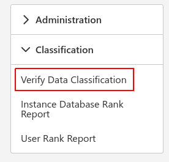

Introduction
To get started select the classification icon and choose verify data classification:

Here you can see the columns that have been flagged as having sensitive information as well as who has access to those columns. You can filter on instance group, instance, database, information type and sensitivity type to easily view and verify columns suspected of having sensitive data.
The flagged columns can then be verified by you. Made easier with bulk verification by selecting the columns that have the same information and sensitivity type before clicking the verify button.
Information type options:
- Banking
- Contact Info
- Credentials
- Credit Card
- Date Of Birth
- Financial
- Health
- Name
- National ID
- Networking
- Other
- SSN
Sensitivity type options:
- Public
- General
- Confidential
- Confidential - GDPR
- Highly Confidential
- Highly Confidential - GDPR
Note
The way the information type is filtered by default is based off the name of the columns and the sensitivity type is based off of the default information type.
After being verified the columns will be moved to the respective list where the column's type can be edited and updated if need be.
To view who in the system has access to the columns click the view access button and a list of the SQL users that have access will pop up.